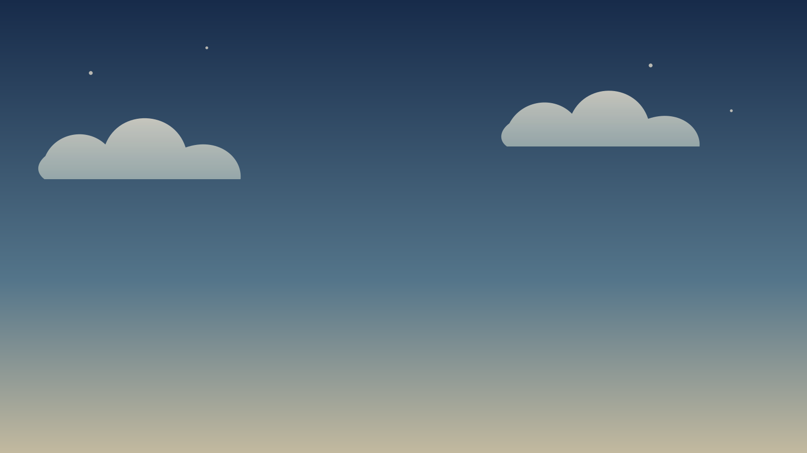
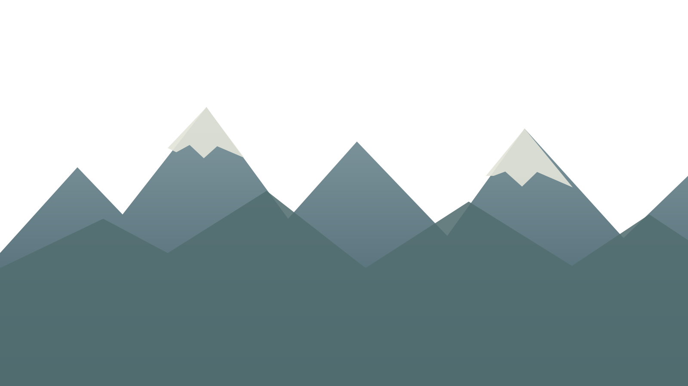
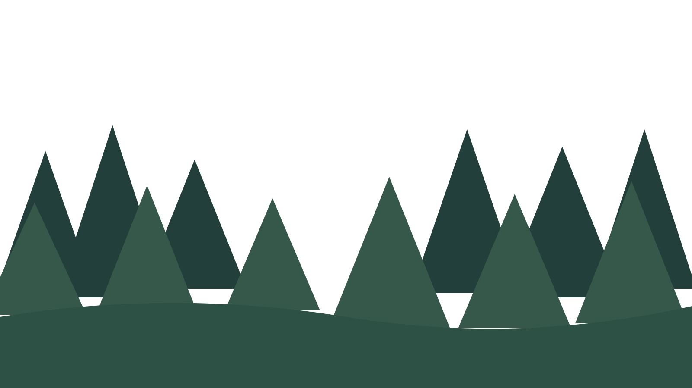
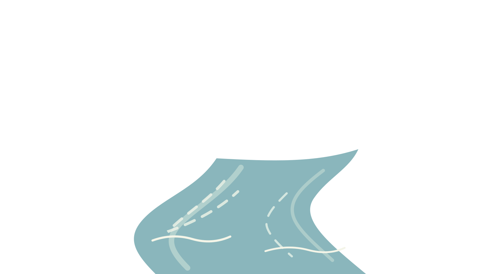
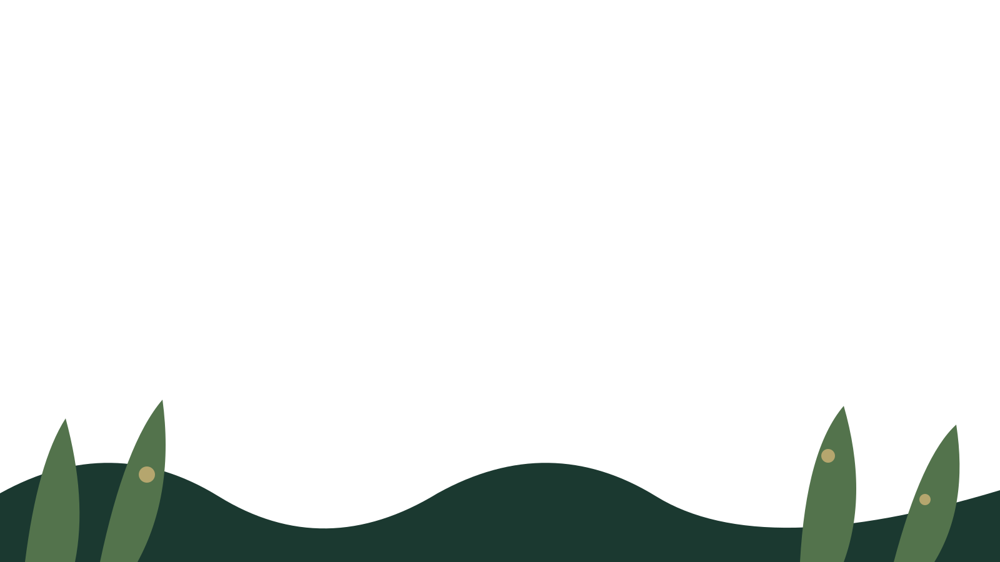

Prueba técnica · cinco capas
Prototipo provisional de profundidad y movimiento independiente





1. Cielo2. Montañas3. Bosque4. Río5. Primer plano
Arte vectorial provisional creado para esta prueba. Cada capa es un archivo SVG separado; no se utiliza una hoja de sprites ni la imagen maestra.